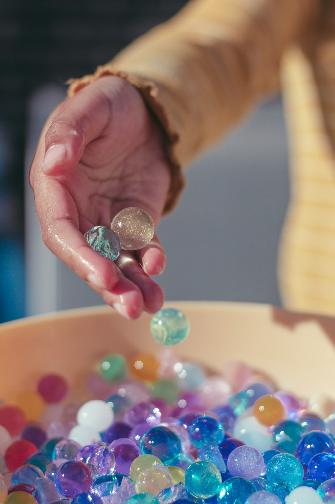

ことばも、からだの使い方も、人との関わり方も。
得意なことを入口にして、毎日のくらしの中で少しずつ育てていきます。

ことばがゆっくりで、まわりのお子さんとの差が気になる
気持ちの切り替えがむずかしく、集団に入りにくい
手先や体の使い方に不安がある
学校のあと、安心して過ごせる居場所がほしい
日本語が第一言語ではなく、どこに相談すればよいか分からない
診断はまだだが、家庭だけで抱えるのが不安になってきた
ひとつでも当てはまれば、まずはご相談ください。受給者証をお持ちでない段階でも大丈夫です。
どんな場所で、どんなふうに過ごすのか。見ていただくのがいちばん分かりやすいです。
受給者証をお持ちでなくても、診断がまだでも、ご相談だけでかまいません。